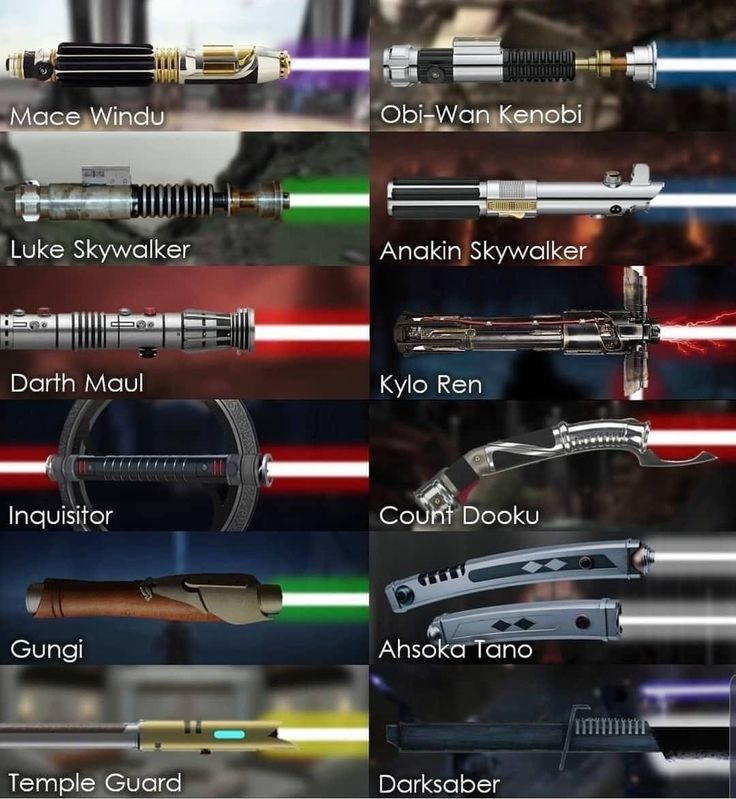

El sonido de los sables láser combina proyector y TV
Uno de los sonidos más reconocibles del cine es el zumbido de los sables láser. Lejos de provenir de una máquina futurista, fue creado por Ben Burtt, el legendario diseñador de sonido, mezclando el zumbido de un proyector de película antiguo con la interferencia electromagnética de un televisor encendido.
La combinación resultante fue un zumbido oscilante, al que luego se le añadió el efecto de movimiento grabando el sonido con un micrófono que se movía frente a un altavoz. Este simple truco generó la sensación de que el sable “corta” el aire al moverse, dotándolo de realismo e intensidad.
El proceso detrás de este sonido es un ejemplo perfecto de cómo la creatividad puede superar la tecnología. A través de elementos comunes, Burtt creó un efecto auditivo que no solo definió a Star Wars, sino que ha sido imitado en cientos de otras obras. Es una pieza maestra del diseño sonoro.
← Volver a curiosidades de Star wars